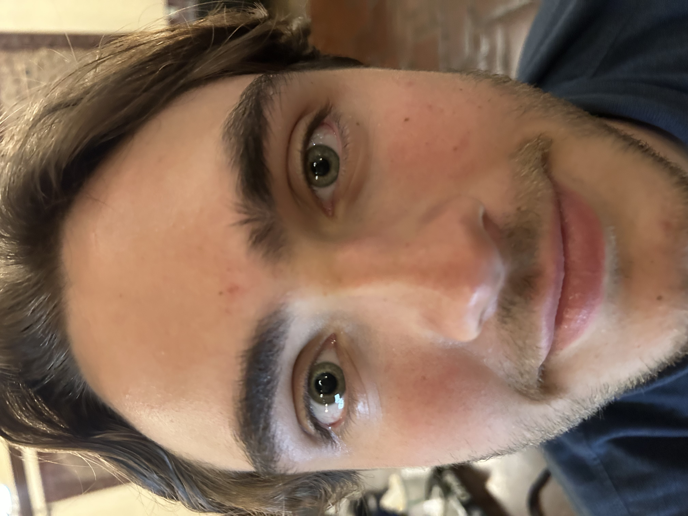
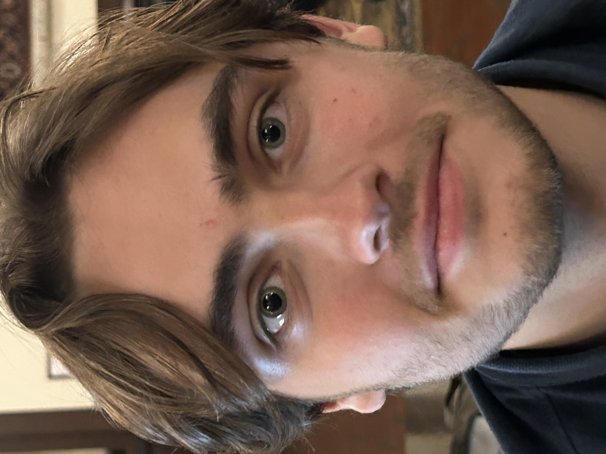
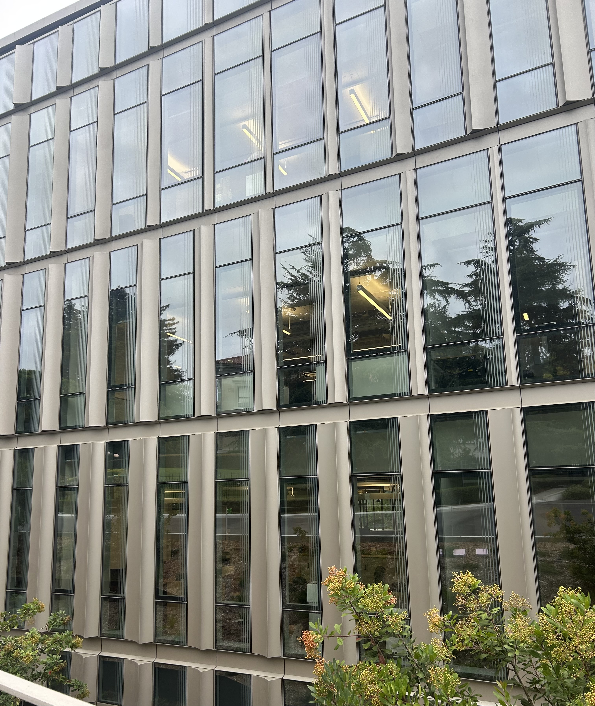
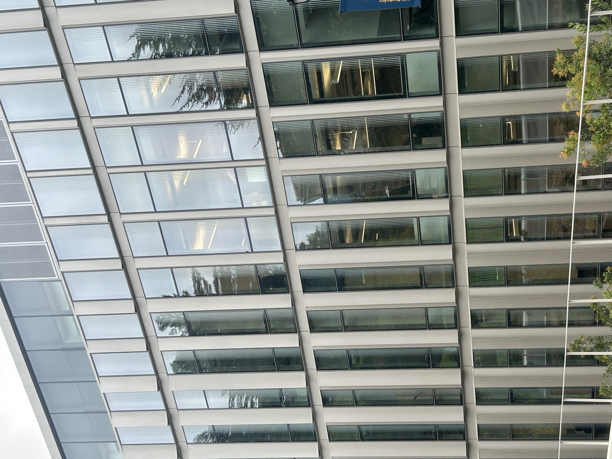
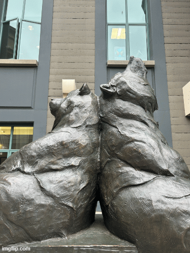

CS 180 · Project 00
Becoming Friends with Your Camera
Part 1: Selfie
The Wrong Way vs. The Right Way


Part 2: Architectural Perspective Compression


Part 3: The Dolly Zoom

CS 180 · Project 00




